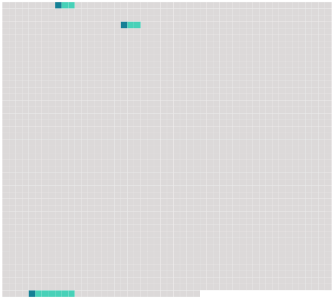

Longueur nb maillons : 3 mentions |
|
Elle se mit à rire en me montrant [ses dents luisantes] [11 phrases]
Ses yeux semblaient toujours luisants de passion ; sa bouche entr'ouverte, [ses dents pointues] , son sourire même avaient quelque chose de férocement sensuel ; et ses seins étranges, allongés et droits, aigus comme des poires de chair, élastiques comme s'ils eussent renfermé des ressorts d'acier, donnaient à son corps quelque chose d'animal, faisaient d'elle une sorte d'être inférieur et magnifique, de créature destinée à l'amour désordonné, éveillaient en moi l'idée des obscènes divinités antiques dont les tendresses libres s'étalaient au milieu des herbes et des feuilles. [93 phrases]
» |
 |
Il est possible de télécharger la ressource sur la page Ortolang |
Si vous avez des questions ou vous voyez des erreurs, merci d'envoyer un mail à silvia.federzoni89@gmail.com |